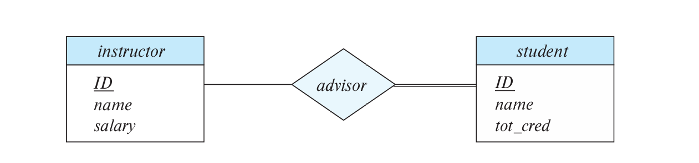

Chapter6 Database Design using the ER Model
6.1 Entity-Relationship Model (ER Model)
ER模型全称实体关系模型（entity-relationship model），通过ER图（ER diagram） 表示，其包含三个基本元素：
- 实体（集合）
- 关系（集合）
- （关系/实体）属性
Entity Sets:
实体（entity） 是一个对象，比如instructorA，studentB等。实体集合（entity set） 由具有共同属性的实体组成，比如instructor集合，student集合等。
实体集合在ER图中用矩形表示，下划线表示主键：

Relationship Sets:
关系（relationship） 存在于两个及以上实体之间，如一个instructor实体和一个student实体之间存在advisor关系。上升一步，instructor集合和student集合之间的所有advisor关系组成advisor关系集合（relationship set）。
关系集合在ER图中用菱形表示：

关系集合也可以有自己的属性，就像实体集合有自己的属性一样。例如advisor关系集合可以有date属性，表示instructor和student之间何时形成advisor关系。
关系集合的属性在ER图中用矩形+虚线表示：

Roles:
如果关系集合涉及到的实体集合为同一个，则需要区分角色。例如prereq关系集合，其实体集合都是course集合，需要区分先修课和后修课。
角色在ER图中在标注在线上：

Degree:
关系集合的度是指涉及到的实体集合的数量。二元关系是最常见的，三元关系也可以表示成多个二元关系，只是用三元关系比较好解释。比如student、instructor、project三者形成的关系。
在ER图中，多元关系的表示与二元关系同理：
6.2 Complex Attributes
某些属性可以进一步细分，例如address可以细分成street、city、state、postal_code等。因此，属性可以分成简单属性（simple）和复合属性（composite）。
某些属性可以对应多值，例如一个person实体对应的phone_number可以有两个。因此，属性可以分为单值属性（single-valued）和多值属性（multivalued）。
某些属性可以由其他的属性确定，例如age可以由date_of_birth确定。因此，这种属性称为派生属性（derived）。
复合属性在ER图中用缩进标明，多值属性在ER图中用{ }标明，派生属性在ER图中用( )标明。
6.3 Mapping Cardinalities
对于一个给定的二元关系集合，每个实体能和多少个实体相关联，分为以下四种情况：
- one to one
- one to many
- many to one
- many to many


Note
实体也可以不参与任何关系，即不连线。
在ER图中，one对应的那一边带箭头，many对应的那一边不带箭头：

Note
对于三元关系，最多只能有一个箭头，否则会引起歧义。
Total and Partial Participation:
如果一个实体集合的每个实体都参与到了关系集合中，则称为全部参与（total participation）；否则称为部分参与（partial participation）。
全部参与在ER图中用双线段表示：

Notation for Expressing More Complex Constraints:
可以通过a..b的形式表示约束，a表示每个实体集合中每个实体最少要参与的关系数，b表示最多能参与的关系数：

左边的0..*表示每个instructor可以不参与advisor关系，也可以参与无限多的advisor关系；右边的1..1表示每个student必须参与且只能参与一个advisor关系。
6.4 Primary Key
Primary Key for Relationship Sets:
一个关系集合的主键包括两部分，一部分是关系集合本身的属性，另一部分是其涉及的所有实体集合的主键的并。
事实上，关系集合的主键取决于关系集合的映射基数：
- one to one：任意一个实体集合的主键都可以直接等同于关系集合的主键
- one to many/many to one：many一边的实体集合的主键可以直接等同于关系集合的主键
- many to many：实体集合的主键的并可以直接作为关系集合的主键
Weak Entity Sets:
假设实体集合section的主键为{course_id，semester，year，sec_id}，其和另一个实体集合course（主键为{course_id}）通过关系集合sec_course相关联。
不难发现，如果将section，course和sec_course三者整体考虑（即考虑sec_course的主键），则section主键中的course_id属性是冗余的。
这种情况下，section实体集合是依赖于course实体集合的，我们将section实体集合称为弱实体集合（weak entity set），course实体集合称为标识性实体集合（identifying entity set），sec_course关系集合称为标识性关系集合（identifying relationship set）。弱实体集合依赖于标识性实体集合。
在ER图中，弱实体集合冗余的主键属性并不写出（因为标识性实体集合已经标明了），只用虚线标明剩下的主键属性（称为discriminator/partial key），弱实体集合的矩形框和标识性关系集合的菱形框全部用双线段表示：
Note
虽然在ER图中如此表示，但弱实体集合的主键依然不变（其下用虚线标明的partial key和冗余的写在标识性实体集合之下的属性），标识性关系集合的主键和弱实体集合的主键是一样的。
6.5 Reducing ER Diagrams to Relational Schemas:
ER图可以转换成一系列表格，对于每一个实体集合或关系集合就可以转换成单独的一张表（以该实体集合或关系集合命名）。
Representing Entity Sets:
对于强实体集合：
可以直接转换成一张表，表的属性就是集合的属性。
对于弱实体集合：
也可以直接转换成一张表，但是表的属性并不能只看ER图中该实体集合下方的属性，因为还有冗余的主键属性写在标识性实体集合下方。
Representing Complex Attributes:
对于复合属性：
将复合属性拆分成简单属性作为表格的属性。
对于多值属性：
单独转换成一张表，表的属性包括实体集合的主键和这个多值属性。例如，一个ID对应多个phone_number，那么针对phone_number可以单独转换成一张表，表的属性包括ID和phone_number，包括元组(22222,456-7890)，(22222,123-4567)等。
对于派生属性：
直接忽略，不写在表格中。
Example
写出以下实体集合转换成表格后的属性。
Representing Relationship Sets:
对于many to many：
将关系集合转换成一张表，这张表的属性包括两个实体集合的主键（其余属性可加）和关系集合的所有属性。
对于many to one/one to many：
如果many一方的实体集合是全部参与的，那么只要将many一方转换成一张表，然后在这张表上再加上one一方的主键和关系集合的所有属性，就可以表示这一关系。
对于one to one：
可以随意挑选一个实体集合作为上述的“many”一方，然后加上另一方的主键和关系集合的属性。
Note
对于many to one/one to many/one to one，“many”乙方如果是部分参与的，则需要考虑null填充的情况。
6.6 Extended ER Features
Specialization:
特化（specialization） 指的是一个实体集合派生多个子实体集合，每个子实体集合有自己额外的属性，或者参与自己的关系，是一种自上而下的设计过程。
子实体集合继承父实体集合的所有属性和关系。有以下两种特化方式：
- 重叠特化（overlapping）： 子实体集合之间有重叠，即一个实体可以同时属于多个子实体集合。例如下图中，一个person既可以属于instructor，又可以属于student。
- 不相交特化（disjoint）： 子实体集合之间没有重叠，即一个实体只能属于一个子实体集合。例如下图中，一个employee要么属于instructor，要么属于secretary。

Note
注意此处两种特化方式的箭头表示。
对于特化的实体集合，有两种转换成表格的方式：
-
方法一：父实体集合正常转换，子实体集合只包含父实体集合的主键和子实体集合的独有属性。
-
person(ID, name, street, city)
- student(ID, tot_credits)
-
employee(ID, salary)
缺点：例如获得一个student的完整信息需要查两张表
-
方法二：每一个实体集合都包含完整属性。
-
person(ID, name, street, city)
- student(ID, name, street, city, tot_credits)
-
employee(ID, name, street, city, salary)
缺点：对于既是student又是employee的实体，name, street, city等属性冗余。
Generalization:
概化（generalization） 是特化的逆操作，将多个子实体集合归纳成一个更高一层的实体集合，是一种自下而上的设计过程。在ER图中的表示与特化一致。
Completeness Constraints:
Note
注意区分完全性约束（completeness）和完整性约束（integrity）。
在特化和概化中，如果高层级的实体集合一定属于低层级的某个实体集合，则称为total，否则称为partial。默认为partial。
Aggregation:
假设student，instructor和project之间存在proj_guide的三元关系，现在有一个新的三元关系eval_for，我们会发现proj_guide和eval_for之间存在冗余，每一个eval_for关系会对应到唯一的一个proj_guide关系，但部分proj_guide关系并不对应到eval_for关系。所以并不能单纯丢弃proj_guide关系集合。

对于这种冗余的情况，我们采用聚合（aggregation） 的方法，将关系看作一个抽象的实体，也就是允许存在关系之间的关系。

6.7 Alternative Notations for Modeling Data